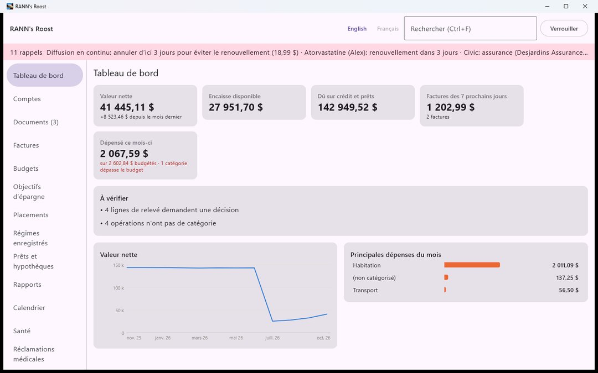
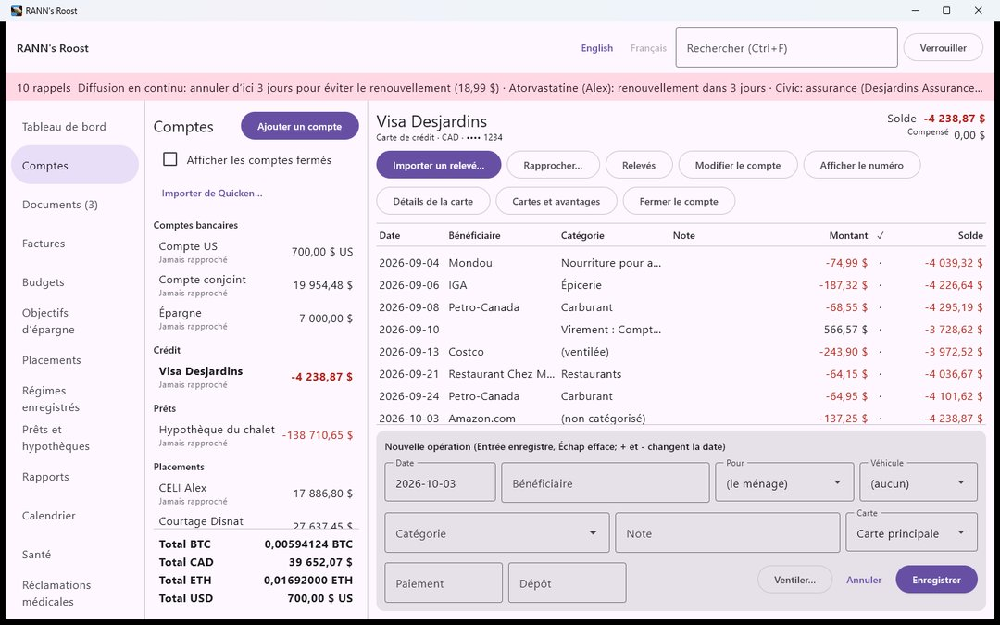
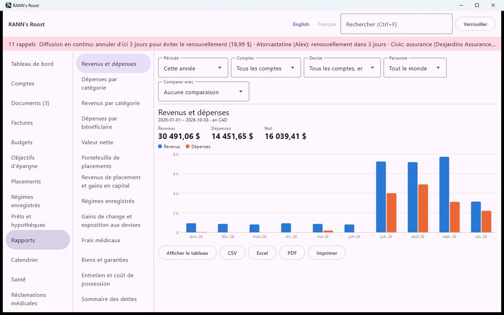
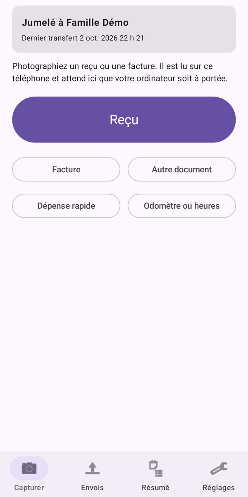

Confidentiel dès la conception
Vos données sont chiffrées en AES-256 et restent sur votre ordinateur. Il n'y a ni compte RANN à créer, ni nuage, ni publicité, ni outil d'analyse. Les téléchargements de cours facultatifs restent désactivés tant que vous ne les activez pas.
RANN's Roost ne se connecte pas à votre banque : vous importez les relevés qu'elle vous fournit. Vos mots de passe bancaires n'y passent jamais.
Tout en un seul endroit
La comptabilité de tous les jours
- Comptes bancaires, cartes de crédit, argent comptant et prêts, dans toute monnaie, avec les taux de change de la Banque du Canada
- Importation des relevés (OFX, QFX, QBO, CSV) et de votre historique de Quicken, GnuCash ou Moneydance
- Rapprochement de chaque relevé au cent près
- Factures, abonnements, budgets et objectifs d'épargne, avec rappels
Placements et retraite
- Prix de base rajusté, gains en capital et revenus de placement pour vos feuillets T3, T5, RL-3 et RL-16
- REER, CELI, CELIAPP, REEE, FERR, FRV et régimes de retraite, avec droits de cotisation et retraits minimums
- Prêts hypothécaires avec l'intérêt composé semestriellement à la canadienne, paiements anticipés et renouvellements
- Rendements, répartition de l'actif, cryptoactifs et métaux précieux
Maison et santé
- Régimes et réclamations médicales, avec coordination des prestations entre conjoints
- Inventaire de la maison, véhicules, garanties, assurances et calendriers d'entretien
- Dossiers de santé, animaux et un calendrier pour les rendez-vous et les échéances
Tout le ménage
- Plusieurs utilisateurs, chacun avec son mot de passe, et des groupes de comptes privés que les autres ne peuvent pas ouvrir
- Rapports avec graphiques, exportés en PDF, Excel ou CSV
- Sauvegardes chiffrées, vérifiées après chaque sauvegarde
Un aperçu



RANN's Roost Mobile, le compagnon gratuit
Photographiez un reçu ou une facture sur le moment : le téléphone détecte les bords, redresse la page et lit lui-même le texte. Les captures attendent sur le téléphone, chiffrées, et vont directement à votre ordinateur par le Wi-Fi de la maison, chiffrées de bout en bout. Rien ne passe par RANN ni par qui que ce soit.
Le téléphone affiche aussi les budgets du mois, les factures à payer et l'entretien à faire sur votre maison et vos véhicules.

Obtenir RANN's Roost
Windows
Dans le Microsoft Store.
Bientôt offert.
Linux
Paquets .deb, .rpm et AppImage.
Bientôt offert.
Compagnon Android
Gratuit sur Google Play. Nécessite RANN's Roost sur votre ordinateur.
Bientôt offert.
Un logiciel libre, avec du soutien
RANN's Roost est un logiciel libre distribué sous la licence publique générale GNU (version 3 ou ultérieure); son code source est sur GitHub. Chacun peut le compiler à partir du code source; les applications prêtes à installer ajoutent des versions signées, les mises à jour et le soutien.
Questions et problèmes : info-rann-apps@NorthMail.ca, ou un billet sur GitHub.
Les chiffres fiscaux de RANN's Roost sont une aide à l'organisation et non des conseils fiscaux. Les dossiers de santé sont une aide à l'organisation et non des conseils médicaux.